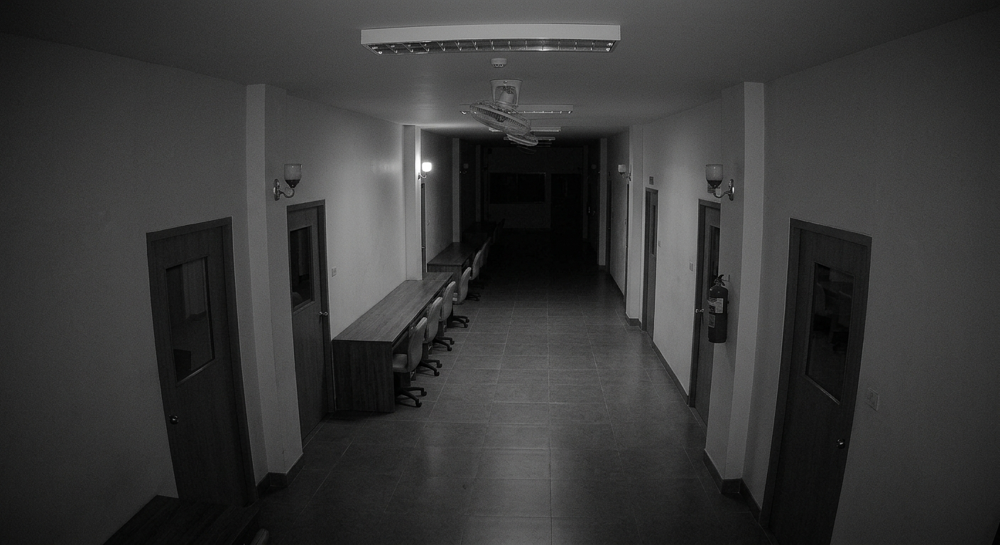

สังเกตสิ่งผิดปกติ... ก่อนที่มันจะสังเกตคุณ
กล้องวงจรปิด 6 จุด: ทางเดิน, บันได, โรงอาหาร, ห้องคอม, ห้องน้ำ, ห้องประชุม
ปลดล็อกเร็วๆ นี้...
โรงเรียนแห่งนี้ถูกปิดตัวลงหลังเกิดเหตุการณ์สะเทือนขวัญ มีรายงานว่ายามกะดึกมักจะหายตัวไปอย่างไร้ร่องรอย... มีคำร่ำลือถึง 'ชายปริศนาในชุดสูทสีดำ' ที่มักจะเดินวนเวียนอยู่ตามโถงทางเดินและห้องต่างๆ ยามวิกาล หน้าที่ของคุณคือเฝ้าระวังผ่านกล้องวงจรปิด ห้ามให้สติหลุดเด็ดขาดจนกว่าจะครบกำหนดเวลาเปลี่ยนกะ!
กำลังเชื่อมต่อสัญญาณกล้องวงจรปิด กรุณารอสักครู่...

คุณไม่สามารถรอดพ้นจากความผิดปกตินี้ได้...